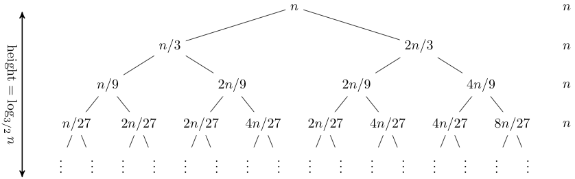

Рекурентне релације и парадигма подели па владај
Рекурентне релације
Рекурентне релације дефинишу низ у зависности од његових претходних чланова.
Рекурентна релација реда k је једначина облика an = f(n,
an-1, an-2, ..., an-k) за n >= k.
Рекурентна релација је једнозначно одређена ако је задато k иницијалних
вредности a0, a1, ..., ak-1. Без задатих
иницијалних вредности, релација описује бесконачну фамилију низова.
- Факторијел је дефинисан рекурентном релацијом n! = n(n-1)! за n > 0 и иницијалном вредношћу 0! = 1.
- Фибоначијеви бројеви припадају низу чији је сваки члан збир претходна два члана. Фибоначијев низ је дефинисан рекурентном релацијом Fn = Fn-1 + Fn-2 и иницијалним вредностима F0 = 0 и F1 = 1. Првих неколико чланова Фибоначијевог низа јесу: 0, 1, 1, 2, 3, 5, 8, 13, 21, 34, 55, 89, ...
Рекурентна релација је линеарна ако је an = Σki=1 cian-i + g(n), при чему су ci константе или функције од n, а g(n) је слободан члан.
Линеарна рекурентна релација је хомогена ако је g(n) = 0, а иначе је нехомогена.
Методе решавања рекурентних релација
Решити рекурентну релацију значи наћи експлицитну формулу за општи члан низа. Неки од начина решавања су:
- итеративна метода;
- метода карактеристичне једначине;
- помоћу мастер теореме и
- помоћу рекурзивног стабла (на слици испод).

Алгоритмика
Алгоритмика је област информатике која се бави анализом временске и просторне сложености програма, као и дизајном што ефикаснијих алгоритама који решавају неки проблем. Алгоритамска сложеност је функција која описује како ресурси које алгоритам троши зависе од величине улаза. Ресурси су углавном време извршавања, меморија и енергија. Величина улаза n је мера количине информација које алгоритам прима и најчешће представља број битова у броју, број елемената у низу, број чворова у графу или дужину ниске.
Асимптотска нотација
Асимптотска нотација описује понашање функције када n тежи бесконачности, занемарујући константе и ниже редове.
Нека су f и g две позитивне функције природног броја n.
За функцију g(n) каже се да је асимптотска горња граница
функције f(n) и пише се f(n) = O(g(n)) ако постоје позитивне
константe c и n0 такве да за свако n > n0
важи f(n) <= cg(n).
Ако важи f(n) > cg(n), за функцију g(n) се каже
да је асимптотска доња граница функције f(n) и пише се f(n) = Ω(g(n)).
Ако важи f(n) = O(g(n)) и f(n) = Ω(g(n)), за функцију g(n) се каже
да је асимптотска тесна граница функције f(n) и пише се f(n) = Θ(g(n)).
Парадигма подели па владај
Алгоритми засновани на алгоритамској парадигми подели па владај (енг. divide and conquer) решавају проблем тако што га поделе на мање потпроблеме исте врсте, а затим реше потпроблеме да би на крају спојили парцијална решења у решење проблема.
Ако је величина проблема n, а алгоритам решава a потпроблема величине n/b (b > 1 је фактор смањења величине проблема) уз додатни рад f(n) на поделу и комбиновање, рекурентна релација која описује подели па владај алгоритме је T(n) = aT(n/b) + f(n). Асимптотско решење ове рекурентне релације даје мастер теорема.
У следећој табели дато је поређење неких релевантних подели па владај алгоритама по временској и просторној сложености.
| Алгоритам | Рекурентна релација | Време | Простор |
|---|---|---|---|
| Merge Sort | T(n) = 2T(n/2) + n | Θ(n log n) | Θ(n) |
| Quick Sort | T(n) = T(k) + T(n-k) + n | Θ(n log n) | O(log n) |
| Binary Search | T(n) = T(n/2) + 1 | Θ(log n) | O(1) |
Закључак
Велике заслуге за брзину којом данас извршавамо свакодневне активности припадају алгоритмима заснованим на парадигми подели па владај и математичком моделу на коме се темеље — рекурентним релацијама. У овом раду је систематично објашњено како теоријска сарадња низова и алгоритмике дају практично решење за временски, енергетски и финансијски ефикасније програме.